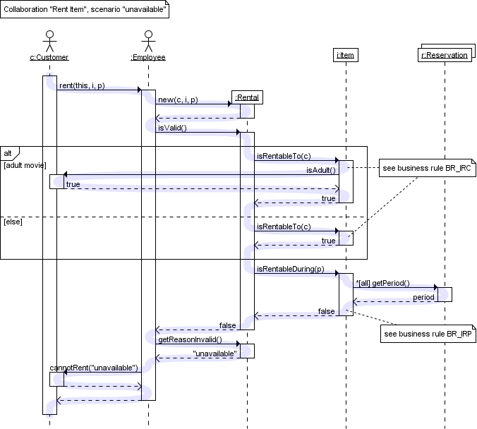

Notes on Sequence Diagrams
- Sequence show how Actors and Classes/Objects interact with eachother over time.
- Extremely useful for identifying potential areas to impliment concurrency.
- Extremely useful for identifying programing concept flaws.
Sequence Diagram Legend

*Actors and Classes/objects are listed across the top
- Time progresses downward.
- A thin line under an object shows that the object exists, but is not active.
- A thick line under an object shows that the object exists and is active.
- A solid line indicates a call to a function of another class/object.
- A dashed line indicates the return value (Not usually shown on initial sequence diagrams, but can be)
- A solid arrowhead indicates a blocking call.
- A winged arrowhead indicates a non-blocking call.
- Text ontop of an arrow shows the name of the function being called. This is not manditory on initial Sequence Diagrams, but is required once the design matures.
- An 'alt' block is the equivilent of an If/If-Else/If-ElseIf-Else statement.
- A 'Loop' block is the equivlient of a while loop.
- A 'par' block is a parallel block.
- Any test in a [] set is called a guard, or a condition that is to be tested. In the event of an 'alt' block, its the if([condition]). Etc.